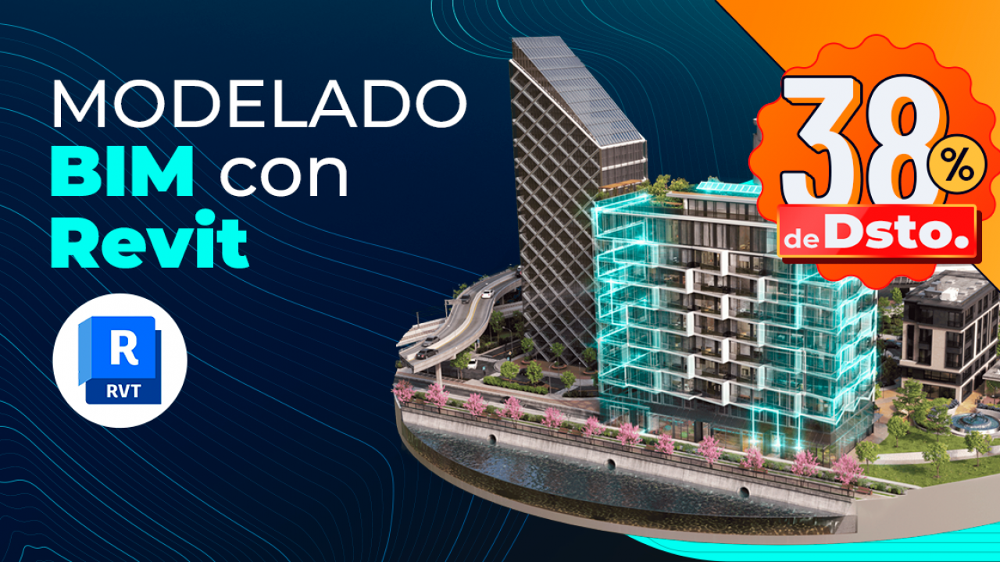
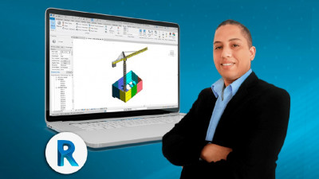

Por qué escribo esto
Con 15 años en obra modelando con Revit, Tekla y Navisworks en proyectos de minería, aeropuertos y hospitales, llego a un punto donde la certificación formal importa tanto como la experiencia práctica. No por ego —sino porque el mercado lo exige.
Cuando encontré la Especialización en Modelado de Proyectos BIM con Revit de Konstruedu, lo primero que hice fue analizarla con ojo crítico: ¿es contenido que ya sé? ¿o hay valor real para un profesional senior?
Esta es mi revisión honesta —sin publicidad, sin afiliados. Solo mi perspectiva de proyectista que vive del modelado BIM.
Ficha de la Especialización
La relación contenido/precio es difícil de superar en el mercado hispanohablante. 127 horas por USD $117 es un costo por hora imbatible si se aprovecha bien.
¿Qué cubre realmente el programa?
La especialización está estructurada en 14 cursos que abarcan las tres grandes disciplinas del modelado BIM con Revit. No es un único curso extendido: es un recorrido completo que parte desde los fundamentos de la metodología BIM hasta el detallado avanzado.



Mi perspectiva como profesional senior
Seré directo: los primeros módulos no me van a enseñar nada nuevo. Si llevas años trabajando con Revit en proyectos reales de ingeniería, los cursos introductorios son terreno conocido. Eso no es una crítica —es lo esperable en cualquier especialización que apunta a un público amplio.
El valor real para mí está en tres áreas específicas:
Lo que no te dirán en la página de ventas:
127 horas es un número enorme, pero la velocidad de avance depende completamente de tu disciplina. Sin un proyecto real que lo sustente, existe riesgo de completar módulos sin internalizar el flujo de trabajo. Mi recomendación: estudia en paralelo con un proyecto propio, aunque sea ficticio.
¿Para quién es esta especialización?
- Dibujante técnico que quiere entrar al mundo BIM
- Arquitecto o ingeniero que usa CAD y necesita migrar a Revit
- Especialista en una disciplina que quiere ampliar a otras
- Profesional con experiencia que busca certificación formal
- Solo buscas aprender automatización (Python/Dynamo)
- Tu foco es Tekla Structures o Advance Steel exclusivamente
- Ya tienes 10+ años en Revit y dominas las 3 disciplinas
- Buscas formación específica en Revit API o scripting
El proceso de certificación
Lo que diferencia a Konstruedu de un curso de plataforma genérica es el proyecto integrador de certificación. No basta con ver los videos: debes entregar un proyecto que demuestre las competencias de todos los cursos, y el equipo docente lo revisa y aprueba —o te da feedback para mejorar.
Este sistema iterativo (entrega → revisión → corrección) es lo más parecido a la dinámica de trabajo real en un proyecto BIM. Que un instructor revise tu modelo y te diga por qué está mal o bien es un diferenciador real frente a los MOOCs masivos.
Veredicto: sí, vale la pena — con matices
A USD $117 por 127 horas de formación, más acceso a tutorías y certificación internacional, la ecuación económica es clara: no existe en el mercado hispanohablante una oferta comparable en esa relación costo-contenido.
Para un proyectista que busca escalar de CAD a BIM, o consolidar su formación multidisciplinar, esta especialización es un camino sólido. Para un profesional senior como yo, el valor está en la certificación formal y en los módulos de disciplinas secundarias —no en los fundamentos, que ya están internalizados desde hace años.
¿Quieres revisar el programa completo?
Visita la página oficial de Konstruedu para ver el temario detallado de los 14 cursos, los instructores y las opciones de pago disponibles.
Ver Especialización en KonstrueduConclusiones Clave
- 127 horas reales cubriendo estructuras, arquitectura y MEP — el programa más completo de Konstruedu en Revit.
- Certificación con proyecto integrador revisado por instructores — no solo badges automáticos.
- USD $117 por acceso completo — la mejor relación costo/contenido BIM en español que he encontrado.
- Aplícalo en paralelo con un proyecto real. La especialización sola no construye experiencia — la práctica constante sí.